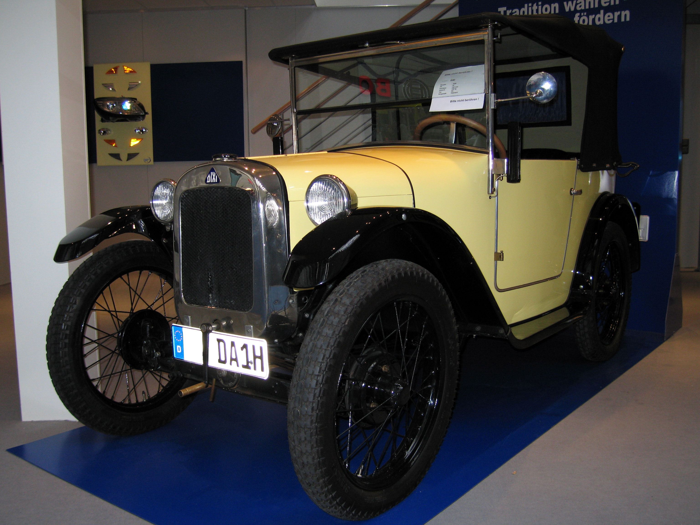
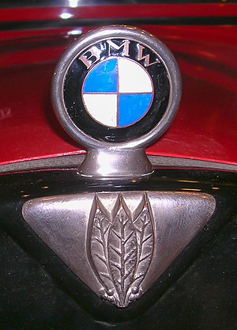

BMW
Historia firmy sięga 1913 roku, kiedy Karl Friedrich Rapp założył przedsiębiorstwo produkujące silniki lotnicze. Powstała z niej firma Bayerische Motoren Werke została oficjalnie zarejestrowana w 1917 roku.